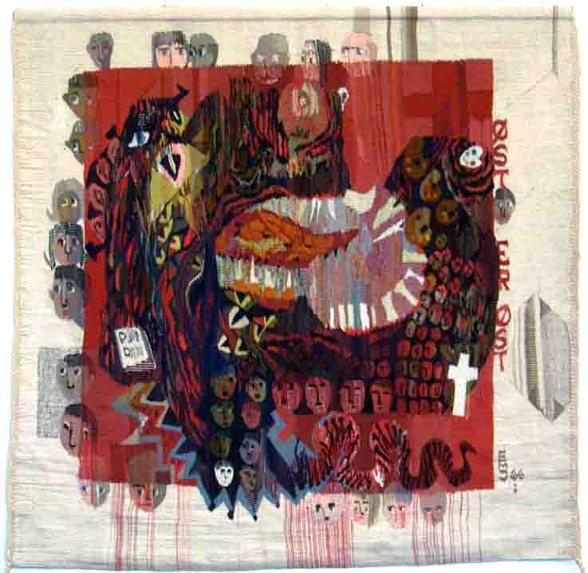

Else Marie Jakobsens Bildetepper
Foto og tekst: Torvald Slettebø, Universitetet i Agder, Seniorsenteret
Omvisning av kunstneren selv på bildeteppeutstillingen til Kirkefestspillene 2003 i Kristiansand
Else Marie Jakobsen i Kristiansand har i sin lange og rike kunstnerkarriere skapt mer enn 500 bildetepper. Det sier seg da selv at utstillingen i Christianssands Kunstforening bare kunne få med en liten del av hennes livsverk, som for en stor del består av monumentale offentlige utsmykningsarbeider. Og altertavler, hele 30 altertavler. Og denne internett-serien er så igjen bare et utsnitt av Festspillutstillingen. Vi tror likevel vi her kan bringe videre et inntrykk av den inderlighet og frodige formidlingsvilje som alltid har preget Else Marie Jakobsen.

Detalj av altertavle til Fevik arbeidskirke, med motivet Jesus stiller stormen. Fevik ligger ved havet, og har lange tradisjoner når det gjelder båtbygging og fiske, så også av den grunn var det naturlig å velge båten som grunnmotiv, med stevnene formet som kors. Kristusskikkelsen danner selv et kors, og teppet fortsetter oppover i et hvitt garn. Nedover fortsetter teppet i et fiolett garn, som forteller at det gjennom Kristus går fra en fiolett advent oppover til en hvit jul, fra fiolett fastetid til den hvite påsketid.

Utsnitt fra teppet "Men samle eder skatter i himmelen, hvor møll og rust ikke tærer". Til venstre har rusten tært hull i teppet, så renningstrådene står nakne igjen. Men i den lykkelige himmelen ser vi stjerner, måne, sol og engler

Nærbilde av teppet over.

Tre ringer bundet sammen, symboliserer treenigheten, Fader, Sønn og Helligånd. I bakgrunnen liljer og fugler.

Else Marie Jakobsen laget etter oppdrag tre tepper til Stiftssenteret i Kristiansand. Dette første teppet symboliserer Vest-Agder, med Domkirken i Kristiansand, Mandals store trekirke, og Valle kirke i Sør-Audnedal. Dekordetaljer er hentet fra Søgne gamle kirke.

Aust-Agder, med Herefos kirke, Valle kirke i Setesdal, og Trefoldighets-kirken i Arendal. Og skriftstedet binder fylkene sammen: "Salige er de som hører Guds ord og bevarer det".

Telemark: Heddal stavkirke, Skien kirke, og Bø gamle kirke. De gode og de onde kreftene symbolisert i henholdsvis djevlehoder og dekorative fargesjatteringer fra gamle kirkemurer. Englehodet øverst til høyre fra Søgne gamle kirke.

Fra utstilling ved et kirkejubileum på Alstadhaug. Det var landesorg da Petter Dass døde, og øverst til venstre ser vi de svarte sørgelappene fiskerne sydde inn i seglene. Korbuen er tatt fra Alstadhaug kirke. Nederst til høyre båten med kors i stevnen, samme motiv som teppet i Fevik kirke

Til 1000-års kirkejubileum på Island, med motiv fra altertavlen i Oddernes kirke. Runesteinen til høyre interesserte islendingene.

Med detaljer fra Søgne gamle kirke: Engelen til venstre fra altertavlen, til høyre de rosemalte veggene, som var overmalt med grått helt til restaureringen etter krigen. Nederst motiver fra kirkebenk-dørene.

Nærbilde av teppet over. Fra altertavlens hovedmotiv, Det siste måltid. Johannes, i gode farger, foran Jesus, mens Judas til venstre har fått falske skittengule farger.

Med motiver fra Bykle kirke. Kirkens rosemaling er kommet med. Vi ser altertavlen, og hvit alterduk, og det røde antependiet, og den blå alterringen. Border fra galleribrystningen.

Nærbilde av teppet over. Blyglassvinduer er malt på de tjukke bjelkeveggene, og dette gjengis her stilisert i teppet.

Til venstre motiv fra en dørstokk fra Dale gård i Valle, sett fra siden og i snitt. Øverst kvinnedrakt i sterke farger, og med sølvsmykker. I midten det røde kirkesjalet, tjeldet. Til høyre hverdagsplagget lusekoften. Nederst til høyre et dåpsbånd, fra Valle.

Folklore Rogaland, 1987. Vevet til Godalen videregående skole i Stavanger, hvor de også hadde linje for kjole- og draktsøm.

Rogalandsbunaden ga motiv til tre tepper.

"Sommerfuglen", eller Tvedestrand. Byen som speiler seg i sjøen. Den rødmalte kirken øverst i midten, med grønt kobbertårn.

Teppe til Omsorgsenteret på Valhalla i Kristiansand. Med Elvine Nicolaisen Frydenlund, som ga tomt ikke bare til Omsorgsenteret, men også til Lund kirke, og til bedehuset - begge bygningene øverst midt i utsnittet. Vi ser også andre kjente bygninger fra området: Lahelle skole, og nederst Filialen, og Tønnefabrikken ved Lundsbroa. Øverst i midten Valhalla Sebefabrikk, og øverst til høyre rekkehusene ("Ud-og-inn-husene") på Valhalla. Teppet heter "Brevkort fra Lundsiden", med 3-øres frimerke.

Nærbilde av teppet over. Elvine Nicolaisen Frydenlund i fokus

Kristiansand Katedralskoles historie, i et teppe som har form som en frise. Else Marie Jakobsen vevde teppet for penger gitt av en pensjonert Katedralskole-lærer. Vi ser øverst Christian IV selv, midt i kvadraturen, og med Kongens stempel på dokumentet nederst.

Øverst til venstre skimter vi Nicolai Wergeland, mens vi helt til høyre har et verdig lærerkollegium. I midten den vakre gamle domkirken, og bak den gamle latinskolen i en etasje.

Et studenkull i full mundur, med gammelt bykart over. Til høyre latinskole-bygningen, nå i tre etasjer, foran katedralskolebygningen, som nå er kunstmuseum. Og på mørk bakgrunn: Latinske og engelske gloser: "To be or not to be".

Men så marsjerer rektor Hauge øverst stolt mot den flotte nye skolebygningen på Gimlemoen, mens de andre "kattene" ikke er fullt så begeistret for å måtte flytte bort fra byens sentrum. Til en noe steril bygning, som likevel er gjort frodigere (øverst til høyre) med Wenneslands kunstsamling på veggene.

"Lena in Memoriam", Fagerholt skole i Kristiansand. Lena og Stine-Sofie ble funnet myrdet i Baneheia ved Kristiansand. Lenas klasse laget sammen med Else Marie Jakobsen et teppe med mye glede i. For slik var Lena, lys og gla.

Nærbilde av teppet over. Lenas klasse malte blomster og sommerfugler i gode glade farger, og de tegningene brukte Else Marie i teppet. Og over det hele står håpets symbol, regnbuen.

Nærbilde av teppet over. Utsnitt av livsgleden i teppet.

Mot en matt kald bakgrunn av snøkrystaller ser vi sommerfuglen i varme fzrger, dekorert med de samme indianske symboler som vi fant i teppet "Gråt mitt elskede Peru".

Øverlands dikt "De hundrede fioliner": Og engang kommer den hellige natt, da evighetens sordiner forvandler den bitreste kval, du har hatt, til hundrede fioliner. - Til minne om kunstnerens sønn, som ble drept i en trafikkulykke.

Grete Nash in Memoriam. 1988.

Teppet har tittelen "Vingen". Kari Christensen in Memoriam. 1997.

Minner fra et opphold i Peru, med Else Marie Jakobsens indianske dåpsbarn Else Maria Mamani. Med symboler og tegn fra dåpsattesten utstedt av den katolske kirke i Los Andes.

"Gråt mitt elskede Peru". Dekorativt teppe med indianske symboler, fra kunstnerens opphold i Andesfjellene i Syd-Amerika i 1987.

Kobberteppe med Aleksandr Solzjenitsyn i fangenskap, bak kobbergitter. Else Marie Jakobsen har alltid vært en engasjert og kjempende kunstner, villig til å våge skinnet for de idealer hun tror på

Til minne om den fryktelige gasskatastrofen i maskinrommet på "Pollo". Ved et uhell ble brannslukningsgassen utløst, og mange omkom. Men det kunne gått enda mye verre, om ikke det hadde vært for brannmannskapenes heltemodige innsats. Teppet henger på Kristiansand brannstasjon.

Skatten "Skoleskipet Sørlandet", som til slutt ble hentet tilbake til Kristiansand. Eier av teppet er skipsrederfamilien Hansen Tangen. Vi ser flere generasjoner, nederst hvite skikkelser, fra tidligere år.

"Skatten som ble borte." Igjen skoleskipet, men her i dekorativ fabulering, med mast og rigg lagt vannrett for komposisjonens skyld. Skattens mynt som metall sydd på teppet.

Else Marie Jakobsen arbeider som regel figurativt: Vi kan kjenne igjen motivet, i hvert fall med litt forklaring. Men hun kan også som her arbeide rent dekorativt, ofte da med inspirasjon fra folkekunsten. Teppemønsteret bygger på den gamle norske åkletradisjonen.

"Gråt mitt elskede Peru": Et land hvor så mye rakner og går i stykker. Vakker gammel bebyggelse skjemmes av smakløse nybygg. Fattigdom og elendighet overskygger ofte det vakre.

"- hvor rust tærer", fremstilt i rustne farger og nakne hull. Men så kom løsningen i et senere teppe: "Samle eder skatter i himmelen". En serie på tre tepper, som henger i Skovlunder kirke i København
Helvedesfremstilling med motiv fra gamle danske kalkmalerier. I nåtids-utgave: Fangeleirene i Sibir: Onde øyne, angiveri. Den onde dragen Stalin kuer og knuser. Blodet siler fra teppet. Men der er et rent hvitt kors, og en ren bok, til venstre.

Nærbilde av teppet over. Mennesker som kikker fram fra undertrykkelsen, mot det frie Vesten.

Nærbilde av teppet over. De fleste ansikter er forkuet, blinde, mange uten øyne og munn. Og drepte, med blodet silende.

Et oppgjør med Vestens svøpe, materialismen. I edderkoppnettet sitter mennesket fanget, i en gullklump, og strever og strever, ikke for å komme fri, men for å få gullklumpen større. Vindeltrapp til høyre bygget opp av gullmynter. Livløse fugler fanget i nettet. Nederst i teppet: Gullsamlerne går over lik for å nå sine mål. Men det er håp, i demokratiets hvite fugler øverst til høyre.

Nærbilde av teppet over. Mennesket fanget i edderkoppnettet.

En bor i sentrum. Duer og Pax Romana som symboler på fred

Kommunismen i Kina, øverst de kinesiske lederne, og under, menneskemassene som ser alt gjennom røde briller.

Nederst ser vi at diktaturets forutsetninger er fanger og henrettelser.

Stiftelsen Arkivet ba Else Marie Jacobsen lage et teppe. Noe tvilrådig sa hun til sist ja, og resultatet er monumentalarbeidet "Krig og fred". Tyske soldater oversvømmer landet, med skittengule hakekors og hjemlige forrederes solkors.

Torturens hovedsete Arkivet, med edderkoppnett strukket over Agder. Men etter hvert begynte hjelp å komme: Fly (øverst) og fallskjermer med forsyninger til hjemmestyrkene.

Det tyske troppetransportskipet Rio de Janeiro ble senket utenfor Høvåg, og døde og overlevende tyskere ble brakt i land.9. april: Litt motstand fra Odderøya, men overmakten ble for stor, og vi ser det norske flagget forsvinne i grått.

Sivil motstand: Røde nisseluer, og nellik i knapphullet på Kongens fødselsdag. Tysklandsfanger i stripete drakter nederst. Over, en eksekusjonspelotong som henretter motstandsfolk.

Fangetransportskipet Westfalen ble senket utenfor svenskekysten, med norske fanger på vei mot tyske konsentrasjonsleire. Noen få ble reddet i land.Til høyre: Galtesund, ført av Olav Starheim, greidde seg over til England, mens Tromsøsund ble senket.

Og så kom Kongen hjem!

Etter at Arkivet i Kristiansand ble frigitt, rykket humanitære organisasjoner inn der Gestapo hadde herjet. Teppet henger i Arkivets lokaler og symboliserer det som foregår der i dag. Organisasjoner som bygger bro mellom kløfter: Øverst FN-symbolet.

Røde Kors, Redd Barna, Institutt for dialog og konfliktløsing, Amnesty, og Norsk Folkehjelp.

Teppene på Arkivet hører til Else Marie Jakobsens viktigste. Men ennå fortsetter hun vevingen for fullt. Under arbeidet med denne artikkelen i april 2004, holder hun på med et nytt storverk, et Kirsten Flagstad-teppe.

Og dermed er på en måte ringen sluttet. For Kirsten Flagstad var Else Maries første store oppdragsgiver, for mange mange år siden.

Else Marie Jakobsen kan se tilbake på et rikt livsverk.Men hun foretrekker å se fremover, og planlegge nye arbeider.
Else Marie Jakobsen døde, 85 år gammel, i 2012